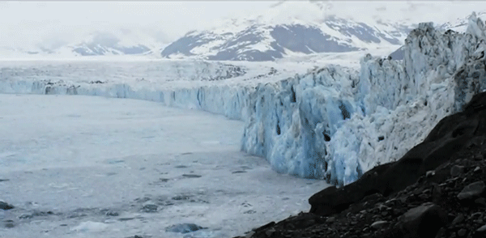

 Climate change feedback
A range of feedbacks govern the response of the system to changes in forcings. Positive feedbacks increase the response of the climate system to an initial forcing, while negative feedbacks reduce it.
 There are a range of feedbacks in the climate system, including water vapour, changes in ice–albedo (snow and ice cover affect how much the Earth's surface absorbs or reflects incoming sunlight), clouds, and changes in the Earth's carbon cycle (e.g., the release of carbon from soil). The main negative feedback is via radiative cooling to space as infrared radiation, which increases strongly with increasing temperature.
There are a range of feedbacks in the climate system, including water vapour, changes in ice–albedo (snow and ice cover affect how much the Earth's surface absorbs or reflects incoming sunlight), clouds, and changes in the Earth's carbon cycle (e.g., the release of carbon from soil). The main negative feedback is via radiative cooling to space as infrared radiation, which increases strongly with increasing temperature.
Feedbacks are an important factor in determining the sensitivity of the climate system to increased atmospheric greenhouse gas concentrations. Other factors being equal, a higher climate sensitivity means that more warming will occur for a given increase in greenhouse gas forcing.Uncertainty over the effect of feedbacks is a major reason why different climate models project different magnitudes of warming for a given forcing scenario. More research is needed to understand the role of clouds and carbon cycle feedbacks in climate projections.
An observation based study on future climate change, on the soil carbon feedback, conducted since 1991 in Harvard, suggests release of about 190 petagrams of soil carbon, the equivalent of the past two decades of greenhouse gas emissions from fossil fuel burning, until 2100 from the top 1-meter of Earth's soils, due to changes in microbial communities under elevated temperatures. Climate models do not account for this possible feedback mechanism. Another study conducted by Harvard researchers suggests that increased water vapor injected into the stratosphere, due to rising temperatures, increases ozone depletion, subsequently raising the odds of skin cancer and damaging crops.
Arctic temperatures have increased at almost twice the rate of the rest of the world. This appears to arise both from an intensification of poleward heat transport and more directly from changes in the local net radiation balance. Some examples of feedbacks thought to contribute include the reduction of snow cover and sea ice, changes in atmospheric and ocean circulation, the presence of anthropogenic soot in the Arctic environment, increases in cloud cover, and water vapor. According to the 2013 IPCC report, models often tend to underestimate Arctic amplification. Studies have linked the rapidly warming Arctic to a vanishing cryosphere, and extreme weather in mid-latitudes and changes in the jet stream.